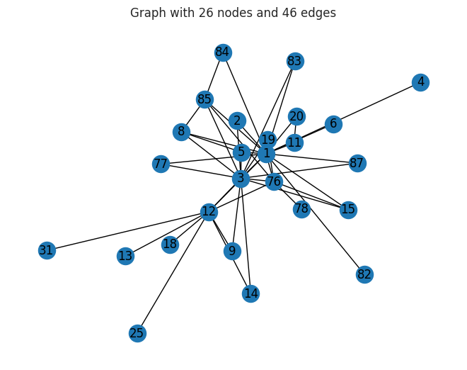
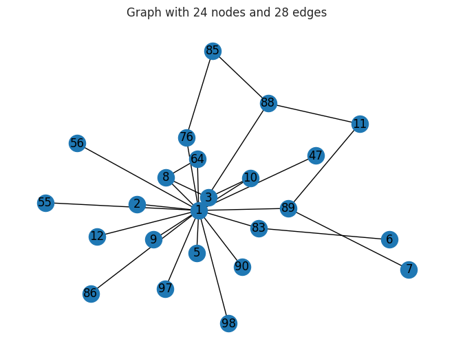
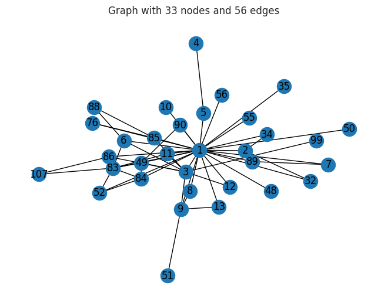
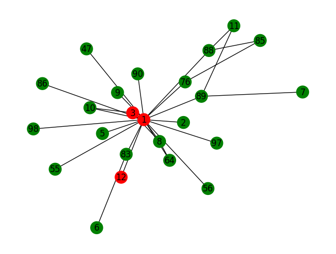
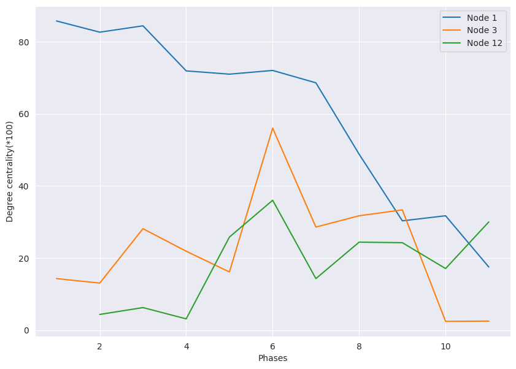
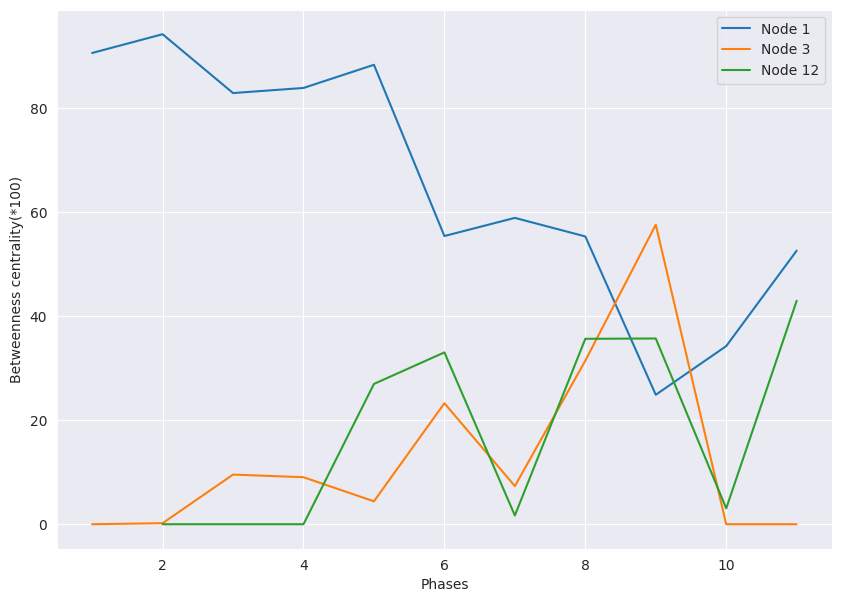
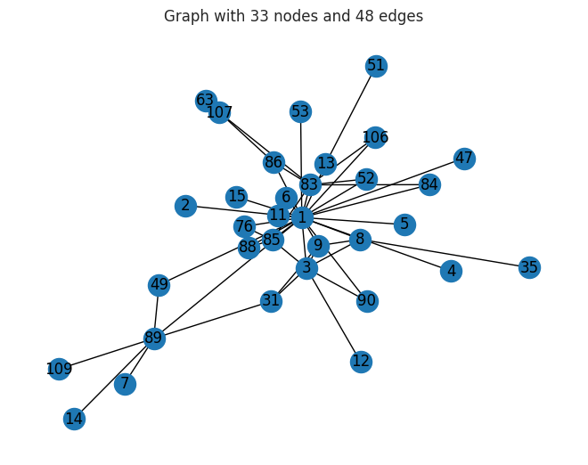
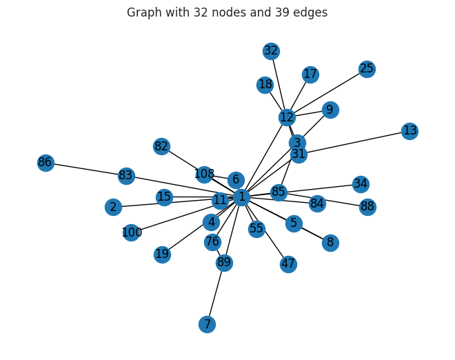
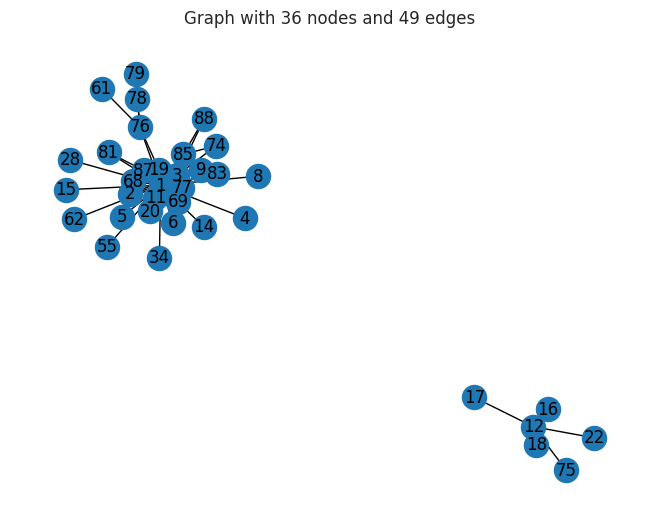
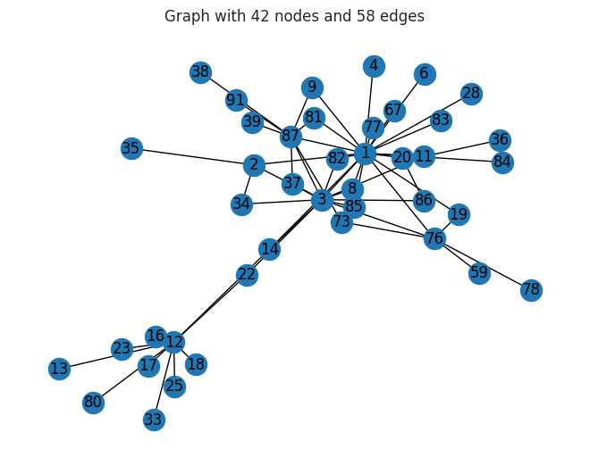

Overview
We studied how a real criminal drug network kept operating even as police repeatedly seized its product.
- CAVIAR was a 1994-1996 Montreal Police / RCMP operation targeting a drug-trafficking network over two years.
- Unusual mandate: seize drugs without arresting anyone until the very end, so the network stayed live and observable.
- Drugs were seized on 11 occasions, with trafficker losses estimated at 32 million dollars.
- Objective: map the network across time and see who stayed central as police pressure forced it to reorganize.
Methodology
flowchart LR A[Edge List] --> B[Build Graph] B --> C["Centrality (degree / betweenness)"] C --> D[Community Detection] D --> E[Interpret Key Actors]
The Data
The evidence was 11 snapshots of who was talking to whom, captured from court-authorized wiretaps.
- 11 wiretap warrants, each valid ~2 months, define 11 sequential phases of the investigation.
- Each phase is stored as an adjacency matrix in a DataFrame capturing communication links between actors.
- Cleaning step: set the node index correctly and convert column labels to integers to match row indices.
- Each matrix was converted to a graph with NetworkX's from_pandas_adjacency for analysis.
- Seizures were uneven across phases, e.g. Phase 10 alone was 18.7M dollars and 2,200 kg of marijuana.


Exploratory Analysis
We drew the network for every phase to watch its shape change as the investigation progressed.
- Visualized all 11 phase graphs to see how the network expanded, contracted, and rewired over time.
- Phases varied widely: some had no seizures while others had multiple disruptions in a single window.
- Early phases show a tighter core; later phases reflect reorganization in response to product losses.
- Visual inspection set up the need for quantitative centrality measures to rank actor importance.


Key Actors & Centrality
Math on the network pointed to a small set of people who consistently held it together.
- Computed degree, eigenvector, betweenness, and closeness centrality (deg_cen, eig_cen, betw_cen, clo_cen) per phase.
- Sorted each measure to surface the top 5 most important nodes in every phase.
- Three actors recur as central: N1 (Daniel Serero), N3 (Pierre Perlini), and N12 (Ernesto Morales).
- Betweenness flagged actors acting as brokers bridging otherwise disconnected parts of the network.
- The Phase 2 graph highlights nodes 1, 3, and 12 in red to make the core players visible.

How the Network Evolved
We tracked the key players phase by phase to see how their roles shifted under police pressure.
- Plotted degree and betweenness centrality for nodes 1, 3, and 12 across all 11 phases.
- Importance was not static: actors rose and fell in influence as seizures disrupted operations.
- Centrality dips and recoveries trace how the network reoriented to keep moving product.
- The trajectories show resilience, with central roles being reassigned rather than the network collapsing.


Key Takeaways
Network analysis turned raw wiretap matrices into a clear story of who mattered and how the network adapted.
- Adjacency matrices from 11 wiretap phases can be read directly into graphs for time-varying analysis.
- Centrality measures reliably identified the network's key brokers across the two-year operation.
- Three individuals (Serero, Perlini, Morales) remained pivotal despite repeated 32M-dollar disruptions.
- Tracking centrality over time reveals network resilience and reorganization, not just static structure.
- Built with: networkx, pandas, numpy, matplotlib, seaborn
More Visualizations




Tech Stack
- pandas — data wrangling and tabular manipulation
- numpy — fast numerical arrays
- seaborn — statistical visualization
- matplotlib — plotting
- networkx — graph / network analysis
Attribution
This project was completed as part of the MIT Applied Data Science Program (MIT IDSS / Great Learning). The program provided the case-study scaffolding; the analysis, code, and results are my own. Published with permission, for portfolio use only.